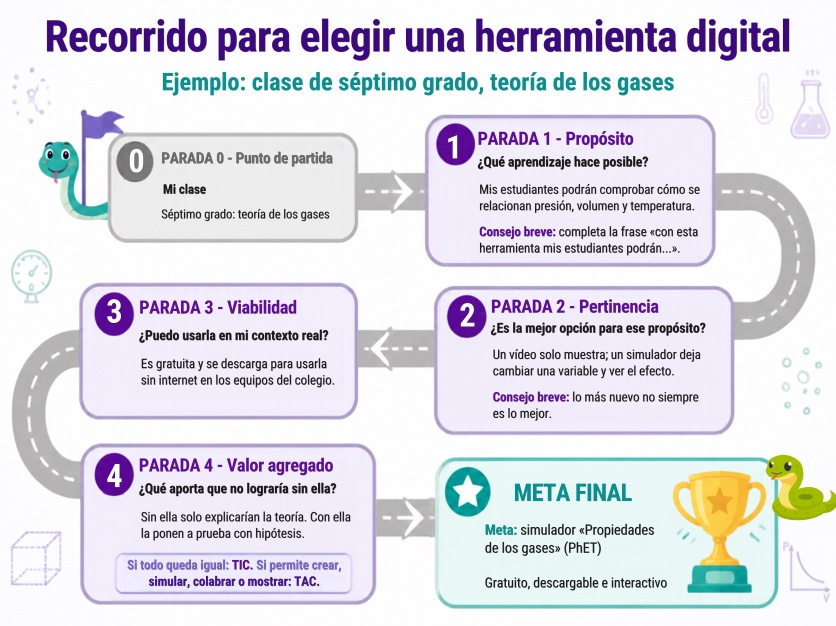

Formación docente del Colegio Colsubsidio Maiporé
Del TIC al TAC
Diseña tu actividad de clase con propósito pedagógico
- TIC La tecnología apoya la clase
- TAC Los estudiantes aprenden con ella
- TEP La institución se transforma
Video: «Las TICS de la educación en 2026», del canal Aprendizaje Virtual (YouTube).
Mensaje de bienvenida
Hola, colega. Seguramente ya usas tecnología en tus clases: proyectas videos, muestras presentaciones o buscas información con tus estudiantes. Aquí no vas a tener que aprender un montón de aplicaciones nuevas. Lo que te proponemos es más sencillo y, a la vez, más útil: decidir con criterio cuándo y para qué usar una herramienta digital.
Primero vas a mirar cómo usas hoy la tecnología. Después vas a analizar algunos casos de clase y, al final, vas a construir el borrador de tu guía de trabajo para una actividad de enseñanza con TAC. Luego la compartirás con tus colegas, recibirás su retroalimentación y la ajustarás hasta tener una versión final.
Este recurso hace parte de la formación docente del Colegio Colsubsidio Maiporé. Lo pensamos para quienes enseñan en sexto y séptimo y quieren sacarle más provecho pedagógico a la tecnología que ya usan.
Resultado de aprendizaje
Al finalizar la experiencia, los docentes de sexto y séptimo del Colegio Colsubsidio Maiporé diseñarán una guía de trabajo para una actividad de enseñanza con TAC, a partir de su autodiagnóstico y del análisis de los criterios de propósito, pertinencia, viabilidad y valor agregado. La guía incluirá el objetivo de aprendizaje, la actividad, la herramienta digital seleccionada, su justificación pedagógica y la evaluación prevista. El diseño será revisado mediante autoevaluación y retroalimentación entre pares, con acompañamiento del docente insignia.
¿Cómo es el recorrido dentro del OVA?
- Reconocer Antes del encuentro presencial, vas a mirar cómo usas hoy la tecnología en tu clase.
- Aprender y practicar En el encuentro presencial, vas a conocer criterios para elegir herramientas y a ponerlos a prueba con casos de clase.
- Crear Vas a empezar tu guía en el encuentro y a completarla después con una plantilla, revisarla y descargarla.
Como no todos llegamos con la misma experiencia, al final del Momento 1 vas a hacer un autodiagnóstico corto. Según el resultado, te sugerimos seguir el recorrido completo o saltar a lo que más te sirva.
El OVA te acompaña en las tres etapas de una experiencia híbrida de aproximadamente una semana: antes, durante y después de un encuentro presencial con el facilitador. Al final compartes tu guía en el tablero colaborativo del aula virtual y retroalimentas la de dos compañeros. En el siguiente paso te mostramos la ruta completa.
El recorrido por el OVA te tomará entre 60 y 90 minutos en total, repartidos entre las tres etapas. No tienes que hacerlo de una sola vez porque tu avance queda guardado. Después de abrirlo una vez con internet, también funciona sin conexión.
Orientaciones generales
La ruta completa de la experiencia
La experiencia tiene una modalidad combinada (presencial y virtual): combina trabajo autónomo, interacción presencial y actividades digitales desde el aula virtual. Se desarrolla en tres etapas, antes, durante y después de un encuentro presencial, en aproximadamente una semana, y termina cuando publicas la versión final de tu guía de trabajo.
El facilitador de la experiencia es el docente insignia del colegio: coordina los tiempos, orienta el análisis de casos y la práctica guiada en el encuentro presencial y da retroalimentación a lo largo del proceso.
-
Etapa 1 Entorno digital de aprendizaje
Momento: antes del encuentro presencial. Modalidad: virtual y asincrónica. Espacio: aula virtual y OVA.
Revisas un video breve o su versión textual, consultas lecturas sobre el uso pedagógico de las TAC y respondes una pregunta inicial sobre cómo utilizas la tecnología en tus clases. En el OVA esto corresponde al Momento 1: Reconocer, con el continuo TIC–TAC y el autodiagnóstico.
Fases de Design Thinking: empatizar y definir.
-
Etapa 2 Aula presencial: encuentro de aplicación y práctica
Momento: encuentro presencial. Modalidad: presencial y sincrónica. Espacio: aulas, laboratorios o auditorio del colegio.
El facilitador orienta el análisis de casos, aclara dudas y acompaña el diseño de una actividad que integre objetivo de aprendizaje, estrategia didáctica, herramienta TAC y evaluación. El OVA sirve de apoyo en el encuentro con el Momento 2: Aprender y practicar (criterios de selección y casos de clase) y el inicio del Momento 3: Crear (plantilla de la guía).
Fases de Design Thinking: idear y empezar a prototipar.
-
Etapa 3 Continuidad en el entorno digital
Momento: después del encuentro presencial. Modalidad: virtual, principalmente asincrónica, con tutorías sincrónicas por videoconferencia. Espacio: OVA, aula virtual y tablero colaborativo.
Completas tu actividad con la plantilla del OVA, revisas la retroalimentación, realizas ajustes y compartes el producto con tus compañeros en el tablero colaborativo del aula virtual. Allí publicas tu aporte según el rol asignado y retroalimentas el aporte de dos compañeros con la rúbrica formativa. Con los comentarios recibidos y los del facilitador ajustas la guía y publicas la versión final. Aquí termina la experiencia.
Fases de Design Thinking: prototipar y probar.
El encuentro y el tablero cumplen funciones distintas
El encuentro presencial permite analizar casos, resolver dudas y practicar con la orientación del facilitador. El tablero colaborativo garantiza que todas las guías reciban retroalimentación escrita de dos compañeros. Por eso el encuentro no reemplaza la revisión entre pares.
La experiencia termina con el diseño, la revisión y el ajuste de tu guía. No incluye su implementación con estudiantes: ellos son los destinatarios futuros de la actividad que diseñas.
Un modelo de formación híbrido
La experiencia sigue un modelo híbrido de tipología 3, que permite integrar las actividades de aprendizaje presencial con el uso de entornos digitales y favorece una experiencia más flexible, participativa y adaptada. La estrategia es el aula invertida: primero exploras los contenidos a tu ritmo en el entorno digital; después, en el encuentro presencial, se aplica y se practica lo aprendido con el facilitador y con tus colegas; y al final continúas en el entorno digital para completar, compartir y ajustar tu guía.
| Etapa | Modalidad | Temporalidad | Espacio |
|---|---|---|---|
| 1. Entorno digital de aprendizaje | Virtual | Asincrónica | Aula virtual y OVA |
| 2. Aula presencial | Presencial | Sincrónica | Aulas, laboratorios o auditorio del colegio |
| 3. Continuidad en el entorno digital | Virtual | Asincrónica, con tutorías sincrónicas | OVA, aula virtual, tablero colaborativo y videoconferencia |
- Temporalidad asincrónica
- Respeta los ritmos de aprendizaje y permite que cada docente avance según su nivel inicial de apropiación tecnológica.
- Temporalidad sincrónica
- Favorece la interacción, la resolución de dudas y la construcción de conocimiento a partir de la experiencia de los docentes.
- Espacios físicos
- Aulas, laboratorios y auditorios del colegio. Permiten que los docentes intercambien ideas y opiniones desde sus prácticas pedagógicas, construyan conocimiento de manera colaborativa y fortalezcan la integración de las TAC en la enseñanza.
- Espacios digitales
- El aula virtual institucional (Google Classroom, Moodle o Colegium) y la videoconferencia (Google Meet, Zoom o Microsoft Teams). Permiten que los docentes exploren los contenidos a su propio ritmo, desarrollen las actividades y diseñen una propuesta aplicable a su práctica pedagógica.
Para saber más sobre este tipo de formación, consulta el video «Metodologías mixtas de aprendizaje» (se abre en otra pestaña), del Instituto Universitario de Educación a Distancia de la UNED.
Herramientas tecnológicas de comunicación y colaboración
Además del OVA, la experiencia usa estas herramientas. Cada una tiene una función distinta:
- OVA (este recurso)
- Apoya la exploración de contenidos, el autodiagnóstico, el análisis de casos y la creación de tu guía. Da retroalimentación automática en los casos y en la revisión del borrador.
- Aula virtual institucional (Google Classroom, Moodle o Colegium)
- Reúne las actividades virtuales y los materiales de la experiencia. Su foro de dudas es el canal de comunicación asincrónica para preguntas y aportes.
- Tablero colaborativo (en el aula virtual)
- Es el espacio de socialización: allí publicas tu aporte según el rol asignado, retroalimentas el aporte de dos compañeros y publicas la versión final de tu guía.
- Correo institucional
- Canal asincrónico para instrucciones, avisos y comunicación directa con el facilitador.
- Videoconferencia (Google Meet, Zoom o Microsoft Teams)
- Se usa para las tutorías sincrónicas con el facilitador, cuando necesitas resolver dudas fuera del encuentro presencial.
El facilitador comparte al iniciar la experiencia el enlace del aula virtual, el del tablero colaborativo y la plataforma de videoconferencia que se usará para las tutorías.
Cómo participar en el tablero colaborativo
- Ingresa al tablero colaborativo.
- Publica tu aporte según el rol asignado.
- Retroalimenta el aporte de dos compañeros.
Integración didáctica del OVA
- Nombre
- Del TIC al TAC: diseña tu actividad de clase con propósito pedagógico.
- Participantes
- Docentes de sexto y séptimo del Colegio Colsubsidio Maiporé.
- Momento
- Las tres etapas: antes del encuentro presencial (Momento 1), durante el encuentro (Momento 2 e inicio del Momento 3) y después del encuentro (Momento 3).
- Duración
- Entre 60 y 90 minutos de recorrido por el OVA, repartidos entre las tres etapas.
- Actividades que apoya
- Exploración de contenidos, autodiagnóstico, análisis de casos, selección justificada de tecnología, creación de la guía y autoevaluación.
- Interacción
- Recorrido por niveles, respuestas a casos, retroalimentación automática, diligenciamiento de la plantilla y descarga en PDF.
- Aporte
- Facilita la exploración de contenidos, el análisis de casos y la creación de actividades de enseñanza, y promueve un aprendizaje práctico, participativo y contextualizado.
- Relación con otras herramientas
- El aula virtual reúne las actividades, el foro de dudas y el tablero colaborativo; el correo institucional y la videoconferencia sostienen la comunicación con el facilitador.
¿Quieres saber por qué la ruta está diseñada así? En resumimos las mediaciones de la experiencia, explicamos cómo construimos los cuatro criterios de selección, cómo se relaciona la ruta con Design Thinking y cómo se aplica el DUA. Puedes consultarlos en cualquier momento desde el Menú.
Momento 1 Reconocer
No es lo mismo usar tecnología que aprender con tecnología
Piensa en la última clase en la que usaste tecnología. Tal vez proyectaste un video, mostraste unas diapositivas o les pediste a tus estudiantes que buscaran algo en internet. En ese caso la tecnología fue un apoyo: la clase habría sido más o menos la misma con el tablero y el libro. A ese uso lo llamamos .
Otra cosa pasa cuando la tecnología cambia la forma en que tus estudiantes aprenden. Por ejemplo, cuando la usan para crear algo, simular un fenómeno, trabajar con otros o mostrar lo que entendieron de una manera que sin ella no sería posible. Ahí hablamos de . Fíjate que la herramienta puede ser la misma en los dos casos. Lo que cambia es el con que la usas.
Veamos la diferencia con un mismo tema: la fotosíntesis. Este es el tipo de video que suele proyectarse en clase.
Ejemplo de uso TIC
«Proyecto un video sobre la fotosíntesis y luego los estudiantes responden el cuestionario del libro.»
Ejemplo de uso TAC
«Los estudiantes registran con el celular el crecimiento de una planta durante dos semanas, organizan los datos en una hoja de cálculo y crean un video corto explicando sus conclusiones.»
Los dos ejemplos usan tecnología, pero en el segundo los estudiantes hacen algo con ella que cambia su manera de aprender. Eso no quiere decir que el primero esté mal. La idea es que sepas en qué nivel estás y decidas tú cuándo vale la pena dar el paso.
Lecturas de apoyo
Antes del encuentro presencial, consulta estas lecturas sobre el uso pedagógico de las TAC. El facilitador también las comparte en el aula virtual.
- Área Moreira, M. (2010). El proceso de integración y uso pedagógico de las TIC en los centros educativos. Un estudio de casos. Revista de Educación, 352, 77–97.
- Mishra, P., y Koehler, M. J. (2006). Technological pedagogical content knowledge: A framework for teacher knowledge. Teachers College Record, 108(6), 1017–1054. https://doi.org/10.1111/j.1467-9620.2006.00684.x (se abre en otra pestaña)
Momento 1 Reconocer
¿Cómo usas hoy la tecnología en tu clase?
Lee estas cinco afirmaciones y marca qué tan seguido te pasan. No hay respuestas correctas. Esto solo sirve para saber desde dónde arrancas, y nadie más ve tus respuestas.
Comparte tus respuestas con el facilitador
Si quieres, responde estas mismas cinco preguntas en la encuesta inicial. Así el facilitador sabe desde dónde arranca cada docente y puede preparar mejor el encuentro presencial. A diferencia del autodiagnóstico, estas respuestas sí le llegan al facilitador, y la encuesta necesita internet.
Abrir la encuesta inicial (se abre en otra pestaña)Momento 2 Aprender y practicar
Cuatro criterios para elegir una herramienta digital
Este momento se trabaja en el encuentro presencial, con la orientación del facilitador. Si lo recorres antes, llega al encuentro con tus dudas.
Antes de abrir una aplicación, hazte estas cuatro preguntas. Empieza siempre por la primera: si la herramienta no sirve para lo que quieres que aprendan, no vale la pena seguir con las demás.
Estos cuatro criterios orientan la selección de la tecnología mientras ideas tu actividad. No son los mismos cinco criterios de la rúbrica formativa, que valoran el diseño completo de tu guía y su revisión.
¿De dónde salen estos cuatro criterios?
Son una elaboración propia del grupo de trabajo. No los tomamos de un instrumento publicado: los construimos a partir de tres marcos teóricos, y de cada uno derivamos una pregunta para elegir la tecnología.
- Propósito y pertinencia se derivan del modelo TPACK (Mishra y Koehler, 2006): la herramienta se elige en función del contenido y de la estrategia pedagógica.
- Viabilidad se deriva del Diseño Universal para el Aprendizaje, DUA (CAST, 2024): las condiciones de acceso no deben convertirse en barreras.
- Valor agregado se deriva del modelo SAMR (Puentedura, 2010): qué cambia en la tarea cuando se usa la tecnología.
Ninguno de estos marcos es, por sí solo, un instrumento para seleccionar herramientas. Por eso los integramos en una secuencia de cuatro preguntas. En explicamos cómo lo construimos.
Propósito: ¿qué aprendizaje hace posible?
Primero va el y después la herramienta. Intenta completar la frase «con esta herramienta mis estudiantes podrán…». Si no se te ocurre cómo terminarla, probablemente la tecnología sobra.
Pregunta orientadora: ¿qué se quiere aprender y cómo contribuye esta tecnología a ese propósito?
Fundamento (TPACK): la decisión tecnológica se articula con el conocimiento del contenido y con la estrategia pedagógica. Por eso la herramienta no se elige solo por novedad, apariencia o disponibilidad.
Pertinencia: ¿es la mejor opción para ese propósito?
La herramienta más nueva o más llamativa no siempre es la que mejor funciona. A veces una hoja de cálculo sencilla enseña más que una aplicación llena de funciones. Valora si se adecúa al contenido, al grado, a tu estrategia didáctica y a las características de tus futuros estudiantes.
Pregunta orientadora: ¿es adecuada para este contenido, esta actividad y estos estudiantes?
Fundamento (TPACK): no toda herramienta sirve para cualquier contenido o propósito pedagógico. La tecnología debe apoyar la actividad prevista, no desplazar el objetivo de aprendizaje.
Viabilidad: ¿puedo usarla en mi contexto real?
¿Es gratuita o de libre acceso? ¿Funciona con el internet y los equipos que hay en el colegio? ¿Qué licencia tiene? ¿Es fácil de usar y qué conocimientos exige? ¿Vale la pena el tiempo que te va a tomar aprender a usarla? Prevé también una alternativa por si falla la conectividad o el acceso.
Pregunta orientadora: ¿puede utilizarse en las condiciones reales del contexto y qué alternativa existe si falla?
Fundamento (DUA): las condiciones de acceso, participación y expresión no deben convertirse en barreras innecesarias para los estudiantes.
Valor agregado: ¿qué aporta que no podría lograr sin ella?
Si la actividad quedaría igual sin tecnología, estás en un uso de apoyo (TIC), y eso está bien siempre que lo tengas claro. El paso a TAC se da cuando la herramienta les permite a tus estudiantes crear, simular, colaborar o mostrar lo que saben de formas nuevas.
Pregunta orientadora: ¿qué mejora concreta aporta esta tecnología frente a otra forma de desarrollar la actividad?
Fundamento (SAMR): el modelo SAMR ayuda a analizar qué aporta la tecnología frente a una alternativa sin ella. Lo explicamos abajo.
El modelo SAMR en pocas palabras
Ruben Puentedura propuso el modelo SAMR para analizar qué cambia en una tarea cuando se usa tecnología. Tiene cuatro niveles:
- Sustitución
- La tecnología reemplaza una herramienta tradicional sin cambio funcional. Por ejemplo, escribir en un procesador de texto en lugar del cuaderno.
- Aumento
- La tecnología reemplaza una herramienta tradicional y agrega mejoras funcionales, como el corrector ortográfico o los comentarios.
- Modificación
- La tecnología permite rediseñar de forma significativa la tarea, por ejemplo, escribir y revisar un texto en colaboración.
- Redefinición
- La tecnología permite crear tareas nuevas que antes eran inconcebibles, como publicar para una audiencia real y recibir sus respuestas.
SAMR no es una escala obligatoria de calidad. No toda actividad tiene que llegar a la redefinición: una sustitución bien pensada puede ser la mejor decisión. Lo importante es que puedas justificar qué mejora aporta la herramienta: retroalimentación, representación, colaboración, acceso a recursos, producción, visualización u otra posibilidad pertinente para tu propósito.
Momento 2 Aprender y practicar
Una actividad de enseñanza tiene tres piezas
Una buena actividad con TAC responde tres preguntas, en este orden. En el Momento 3 vas a usar una plantilla que sigue estas mismas tres piezas. Además, en tu guía de trabajo vas a registrar la herramienta digital seleccionada y su justificación pedagógica: en total, cinco elementos.
Objetivo
¿Qué van a aprender? Escríbelo como algo que puedas ver. En lugar de «comprenderán las fracciones», mejor «resolverán repartos con fracciones en situaciones de la vida diaria».
Actividad
¿Qué van a hacer? Describe la tarea de los estudiantes y el papel que cumple la tecnología: qué herramienta usan, para qué y qué entregan al final.
Evaluación
¿Cómo vas a saber que aprendieron? Piensa en la evidencia que vas a recoger (un producto, una explicación, un registro) y en cómo la vas a valorar.
Las tres piezas tienen que coincidir
Si el objetivo es que tus estudiantes argumenten, la actividad tiene que ponerlos a argumentar y la evaluación tiene que fijarse en sus argumentos. Cuando una de las piezas apunta para otro lado, la actividad pierde fuerza.
Un ejemplo completo: la teoría de los gases
Así se ven los cuatro criterios en una clase real de séptimo. Fíjate cómo cada parada descarta opciones hasta llegar a la herramienta.

Ver la infografía en texto
- Punto de partida. Mi clase: séptimo grado, teoría de los gases.
- Parada 1, propósito: ¿qué aprendizaje hace posible? Mis estudiantes podrán comprobar cómo se relacionan la presión, el volumen y la temperatura. Consejo: completa la frase «con esta herramienta mis estudiantes podrán…».
- Parada 2, pertinencia: ¿es la mejor opción para ese propósito? Un video solo muestra; un simulador deja cambiar una variable y ver el efecto. Consejo: lo más nuevo no siempre es lo mejor.
- Parada 3, viabilidad: ¿puedo usarla en mi contexto real? Es gratuita y se descarga para usarla sin internet en los equipos del colegio.
- Parada 4, valor agregado: ¿qué aporta que no lograría sin ella? Sin ella, los estudiantes solo escucharían la teoría. Con ella, la ponen a prueba con hipótesis. Si todo queda igual, es TIC. Si permite crear, simular, colaborar o mostrar, es TAC.
- Meta final. El simulador «Propiedades de los gases» de PhET: gratuito, descargable e interactivo.
Momento 2 Aprender y practicar
Analiza tres casos de clase
Ahora vas a usar los cuatro criterios y las tres piezas. Lee cada caso, elige la respuesta que te parezca mejor y lee la retroalimentación. Si te equivocas, puedes intentarlo otra vez.
Escogimos casos de asignaturas distintas porque los criterios sirven para cualquiera.
Terminaste los tres casos
¿Notaste que en ningún caso el problema era la herramienta? Lo que fallaba, o funcionaba, era la relación entre el propósito, la actividad y la evaluación. Ahora te toca diseñar tu propia guía de trabajo.
Momento 3 Crear
Diseña tu guía de trabajo para una actividad con TAC
Piensa en una clase real que vayas a dar en sexto o séptimo y completa la plantilla con los cinco elementos de tu guía: objetivo, actividad, herramienta digital, justificación pedagógica y evaluación. No tiene que quedar perfecta. Es un borrador: lo empiezas en el encuentro presencial con el acompañamiento del facilitador y lo completas después. Luego lo vas a revisar con la lista de criterios y a compartir en el tablero colaborativo, donde dos compañeros lo van a comentar.
¿Prefieres trabajar en papel o sin conexión? .
Momento 3 Crear
Revisa tu diseño
Primero, el OVA revisa tu borrador. Después lo revisas tú con una lista de criterios y conoces la rúbrica con la que dos compañeros lo van a comentar en el tablero colaborativo.
Revisión automática de tu borrador
Esta revisión es solo una guía. Busca palabras clave en lo que escribiste, así que no reemplaza tu criterio ni los comentarios de tus colegas y del facilitador.
Revísalo tú con esta lista
Esta lista orienta tu primera revisión personal, antes de compartir el borrador. Marca solo lo que de verdad se cumpla en lo que escribiste. Si algo no se cumple, vuelve con Anterior y ajústalo.
Rúbrica formativa para revisar tu guía
La rúbrica orienta tu autoevaluación y la revisión entre pares. Mientras la lista de arriba sirve para una primera revisión personal, la rúbrica apoya una revisión más detallada y los comentarios que tus compañeros van a dejar en el tablero colaborativo.
No asigna notas ni ponderaciones. Su finalidad es identificar fortalezas y oportunidades de mejora en tu diseño.
| Criterio | Superior | Alto | Básico | Bajo |
|---|---|---|---|---|
| Propósito pedagógico | El objetivo de aprendizaje es claro, medible y coherente con los estándares y DBA del grado. Se articula con el plan de área y prevé desempeños diferenciados. | El objetivo es claro, medible y coherente con el currículo del grado, aunque no contempla desempeños diferenciados. | El objetivo está formulado, pero es general o poco medible, o su relación con el currículo del grado es parcial. | El objetivo no se identifica, no es medible o no guarda relación con el currículo del grado. |
| Integración TPACK | La tecnología se elige por su aporte al contenido y a la estrategia didáctica. Los tres componentes se articulan plenamente y la tecnología potencia o transforma la actividad. | Los tres componentes están integrados y la tecnología apoya de forma pertinente la actividad. | La tecnología se usa como complemento o sustituto de lo tradicional. La integración con contenido y pedagogía es parcial. | La tecnología es decorativa o está desarticulada del contenido y del propósito pedagógico. |
| Recursos digitales de libre acceso | Los recursos son de libre acceso, pertinentes y confiables, con licencia verificada y fuente citada. Se justifica su elección y se prevé una alternativa ante fallas de conectividad. | Los recursos son de libre acceso, pertinentes y confiables, con licencia y fuente identificadas. | Los recursos son de libre acceso, pero su pertinencia o confiabilidad no está justificada, o la licencia y la fuente están incompletas. | Los recursos no son de libre acceso, no son pertinentes o no se identifica su fuente. |
| Evaluación del aprendizaje | Define evidencias e instrumentos coherentes con el objetivo (rúbricas, listas de cotejo u otros) y contempla retroalimentación, autoevaluación o coevaluación de los estudiantes. | Define evidencias e instrumentos coherentes con el objetivo e incluye retroalimentación a los estudiantes. | Menciona evidencias o instrumentos, pero su coherencia con el objetivo es parcial o no prevé retroalimentación. | No define cómo se valorará el aprendizaje, o los instrumentos no corresponden al objetivo. |
| Revisión y mejora del diseño | La versión final evidencia mejoras claras en la coherencia pedagógica de la guía a partir de la autoevaluación y la retroalimentación recibida. | Utiliza la autoevaluación y los comentarios recibidos para realizar mejoras pertinentes. | Realiza algunos ajustes, principalmente puntuales o formales. | No presenta evidencia suficiente de revisión y mejora del diseño. |
DBA: Derechos Básicos de Aprendizaje. Los niveles de desempeño orientan la autoevaluación y la retroalimentación entre pares. No se asignan notas ni ponderaciones; el propósito es identificar fortalezas y oportunidades de mejora.
¿Qué valora cada criterio y en qué momento?
- 1. Propósito pedagógico (durante el diseño)
- El objetivo de aprendizaje es claro, observable y coherente con el currículo del grado.
- 2. Integración TPACK (durante el diseño)
- La tecnología se elige por su aporte al contenido y a la estrategia didáctica, no por novedad.
- 3. Recursos digitales de libre acceso (durante el diseño)
- Los recursos son pertinentes, confiables, viables y tienen fuente y licencia claras.
- 4. Evaluación del aprendizaje (durante el diseño)
- La guía incluye evidencias e instrumentos coherentes con el objetivo y prevé retroalimentación.
- 5. Revisión y mejora del diseño (revisión y ajuste)
- Se consideran los cambios entre el borrador y la versión final y el uso de la autoevaluación y los comentarios recibidos.
Descargar la rúbrica formativa en Word (.docx, 23 KB)
El documento incluye el resultado de aprendizaje, la ruta de evaluación formativa, la rúbrica y una tabla para registrar la retroalimentación y los ajustes.
Descarga tu borrador
Este borrador es tu aporte para la etapa 3. Descárgalo en PDF y publícalo en el tablero colaborativo del aula virtual. En el siguiente paso te contamos cómo sigue la revisión.
Para guardarlo en PDF, elige «Guardar como PDF» en la ventana de impresión. El archivo de texto se abre en cualquier equipo, incluso sin internet.
Momento 3 Crear
Comparte y mejora tu guía
Con el borrador descargado termina tu recorrido por el OVA, pero no la experiencia. En la etapa 3, continuidad en el entorno digital, vas a compartir tu guía en el tablero colaborativo, vas a retroalimentar la de dos compañeros y vas a ajustar la tuya a partir de lo que recibas.
-
Paso 1 Ingresa al tablero colaborativo
Entra al tablero colaborativo del aula virtual con el enlace que comparte el facilitador.
-
Paso 2 Publica tu aporte según el rol asignado
Como autor, publica el borrador de tu guía que descargaste.
-
Paso 3 Retroalimenta el aporte de dos compañeros
Como revisor, comenta la guía de dos compañeros con la rúbrica formativa.
-
Paso 4 Ajusta y publica la versión final
Con los comentarios de tus compañeros y del facilitador ajustas tu guía y publicas la versión final en el tablero. Aquí termina la experiencia.
Instrucciones para la revisión entre pares
Si eres el autor de la guía
- Elabora y descarga el borrador de tu guía.
- Revísalo con la lista de criterios antes de compartirlo.
- Ten en cuenta las orientaciones que recibiste del facilitador en el encuentro presencial.
- Publica el borrador en el tablero colaborativo del aula virtual.
- Consulta los comentarios de los dos compañeros que revisan tu guía y la retroalimentación del facilitador.
- Decide qué ajustes realizar y justifica las decisiones relevantes. Si tienes dudas, escríbelas en el foro del aula virtual o pide una tutoría por videoconferencia.
- Publica la versión final en el tablero colaborativo durante la misma semana.
Si eres compañero revisor (revisas dos guías)
- Lee completas las dos guías que te corresponden y su justificación pedagógica.
- Utiliza los cinco criterios de la .
- Identifica fortalezas específicas; evita comentarios generales como «está bien».
- Señala aspectos por mejorar con referencia a elementos concretos de la guía.
- Formula sugerencias realizables.
- No asignes una nota.
- Publica tus comentarios en el tablero colaborativo dentro del plazo establecido.
Estructura mínima del comentario en el tablero colaborativo
Organiza tu comentario en tres partes. Puedes copiar esta estructura y completarla:
Fortalezas: … Aspectos por mejorar: … Sugerencias concretas: …
Relaciona cada parte con uno o varios de los cinco criterios de la rúbrica.
Para que se vean los cambios de tu guía
Publica la versión final como una nueva publicación en el tablero colaborativo, sin borrar el borrador, y agrega una nota breve con los principales cambios que hiciste y por qué. Así se pueden reconocer las mejoras entre el borrador y la versión final, que es lo que valora el quinto criterio de la rúbrica.
Tu autodiagnóstico es personal
En el tablero colaborativo se comparten la guía y la retroalimentación. Los resultados de tu autodiagnóstico son tu línea base personal: no los publiques.
Antes de terminar, piensa en lo que aprendiste
Tómate unos minutos para responder estas preguntas. Puedes escribir en una libreta o simplemente pensarlo.
- ¿Qué entendí? Con tus palabras, ¿qué diferencia hay entre usar la tecnología como apoyo y diseñar con TAC?
- ¿Qué cambió en mi forma de pensar? ¿Cómo elegías antes las herramientas y cómo lo vas a hacer ahora?
- ¿Qué necesito seguir trabajando? ¿Justificar mejor la herramienta? ¿Plantear la evaluación?
Terminaste el recorrido por el OVA
Ya tienes el borrador de tu guía. La experiencia continúa en el tablero colaborativo con la retroalimentación de dos compañeros y del facilitador, y termina cuando publiques la versión final ajustada. Cada vez que vuelvas a planear con tecnología, repasa los cuatro criterios.
Fundamentos
Por qué la ruta está diseñada así
Esta sección explica los referentes metodológicos y pedagógicos de la experiencia. Puedes consultarla en cualquier momento desde el Menú.
Mediaciones de la experiencia
La experiencia es híbrida de tipología 3 y se apoya en cinco tipos de mediación. Esta tabla resume cómo se concreta cada una y lleva directamente al lugar del OVA donde se desarrolla.
| Mediación | Cómo se concreta | Dónde está |
|---|---|---|
| Pedagógica | La mediación pedagógica se orienta a fortalecer las capacidades de los docentes de sexto y séptimo del Colegio Colsubsidio Maiporé para integrar las TAC en sus prácticas de enseñanza, con una selección intencionada de herramientas digitales que respondan a propósitos educativos concretos. Se expresa en el resultado de aprendizaje y en el producto esperado: la guía de trabajo. | |
| Didáctica | ¿Cómo se desarrolla el aprendizaje? Mediante Design Thinking, que permite a los docentes reconocer necesidades de su práctica educativa, generar ideas y diseñar soluciones. Como apoyo se usa el OVA Del TIC al TAC, que facilita la exploración de contenidos, el análisis de casos y la creación de actividades de enseñanza, con los cuatro criterios de selección (elaboración propia derivada de TPACK, DUA y SAMR). | |
| Evaluativa | ¿Cómo sabremos que aprendieron? Mediante la rúbrica formativa (cinco criterios y cuatro niveles, en tabla y en Word), que permite valorar la integración de las TAC con propósito pedagógico, la coherencia entre los objetivos, las estrategias didácticas y las herramientas digitales, y la aplicación de los conocimientos en el diseño de una actividad de enseñanza. La complementan el autodiagnóstico como línea base, la retroalimentación automática del OVA y la lista de criterios. | |
| Organizativa | ¿Cómo se coordinará la experiencia? Mediante encuentros presenciales en los espacios de formación institucional y actividades virtuales en el aula virtual, con modalidad híbrida de tipología 3 y estrategia de aula invertida. Los docentes exploran los contenidos y desarrollan actividades de manera autónoma antes del encuentro, participan en el análisis de casos y la práctica guiada durante el encuentro, y después elaboran y comparten su actividad de enseñanza. La coordinación está a cargo del facilitador (docente insignia), que orienta el proceso y la retroalimentación según la disponibilidad de los docentes y el acceso a los recursos digitales. | |
| Comunicativa | ¿Cómo interactuarán y se acompañarán? Mediante los encuentros presenciales, las actividades del OVA y los espacios de socialización entre docentes, con instrucciones claras, intercambio de ideas y retroalimentación del facilitador. Además de la retroalimentación automática del OVA, la comunicación asincrónica se hace por el foro de dudas del aula virtual (Google Classroom o Moodle) y el correo institucional, y la sincrónica por tutorías en Google Meet, Zoom o Microsoft Teams. En el tablero colaborativo cada docente publica su aporte según el rol asignado y retroalimenta el aporte de dos compañeros. |
Además, en esta misma sección se explica , y en está la licencia Creative Commons Atribución–NoComercial–CompartirIgual 4.0 Internacional (CC BY-NC-SA 4.0).
Los cuatro criterios de selección: un instrumento de elaboración propia
Los criterios de propósito, pertinencia, viabilidad y valor agregado son una elaboración propia del grupo de trabajo. Los derivamos de tres marcos teóricos que, por separado, no ofrecen un instrumento para seleccionar herramientas digitales: TPACK describe los conocimientos que el docente integra al enseñar con tecnología (Mishra y Koehler, 2006); el DUA propone principios para anticipar la diversidad de quienes aprenden (CAST, 2024), y SAMR describe qué cambia en una tarea cuando se usa tecnología (Puentedura, 2010). De cada marco tomamos lo que aporta a la decisión y lo convertimos en una pregunta orientadora.
| Criterio | Marco de referencia | Qué tomamos del marco |
|---|---|---|
| 1. Propósito | TPACK (Mishra y Koehler, 2006) | La decisión tecnológica parte del contenido y del objetivo de aprendizaje, no de la herramienta. |
| 2. Pertinencia | TPACK (Mishra y Koehler, 2006) | La herramienta se ajusta al contenido, a la estrategia didáctica y a los estudiantes. |
| 3. Viabilidad | DUA (CAST, 2024) | Las condiciones de acceso, participación y expresión no deben convertirse en barreras; se prevé una alternativa. |
| 4. Valor agregado | SAMR (Puentedura, 2010) | Se justifica qué mejora aporta la tecnología frente a una alternativa sin ella, sin exigir un nivel determinado. |
Los criterios se aplican en orden: si la herramienta no responde al propósito, no tiene sentido valorar los demás. Se trata de un instrumento formativo para orientar y justificar la decisión, no de una escala de medición validada. Su uso se revisa en la autoevaluación, en el encuentro presencial con el facilitador y en la revisión entre pares.
El recorrido sigue las fases de Design Thinking
Design Thinking organiza el recorrido formativo de los docentes: parte de sus necesidades, define un propósito, explora alternativas, construye un prototipo y lo pone a prueba con otros. No es una secuencia rígida, porque se puede volver a una fase anterior cuando hace falta, ni es una metodología para implementar la actividad con estudiantes.
| Fase | Qué se hace en la ruta | Evidencia |
|---|---|---|
| 1. Empatizar | Etapa 1: autodiagnóstico de las prácticas, necesidades y punto de partida de cada docente. | Resultado del autodiagnóstico. |
| 2. Definir | Etapas 1 y 2: delimitación de lo que se quiere que aprendan los estudiantes y formulación de un objetivo observable. | Objetivo de aprendizaje. |
| 3. Idear | Etapa 2, encuentro presencial: análisis de casos guiado por el facilitador y comparación de herramientas y estrategias mediante propósito, pertinencia, viabilidad y valor agregado. | Selección justificada. |
| 4. Prototipar | Etapas 2 y 3: diseño de la guía, iniciado en el encuentro con acompañamiento del facilitador y completado con la plantilla del OVA (objetivo, actividad, herramienta digital, justificación pedagógica y evaluación). | Borrador descargado y publicado en el tablero colaborativo. |
| 5. Probar | Etapa 3: autoevaluación, retroalimentación de dos compañeros y del facilitador en el tablero colaborativo, y ajuste del diseño. | Comentarios recibidos y guía ajustada. |
¿Cómo se aplica el DUA en esta ruta?
El Diseño Universal para el Aprendizaje (DUA) propone anticipar la variedad de quienes aprenden y ofrecer distintas formas de participar, de acceder a la información y de demostrar lo aprendido. Estas son las decisiones concretas que tomamos en la ruta:
Compromiso: múltiples formas de participación e implicación
- El autodiagnóstico permite reconocer el punto de partida personal y sugiere una ruta según el resultado.
- El resultado de aprendizaje y el producto esperado, la guía de trabajo, se presentan desde la bienvenida.
- Los casos ofrecen oportunidades para relacionar la actividad con la práctica docente.
- La selección de la herramienta permite tomar decisiones justificadas según el contexto de cada docente.
- La autoevaluación, el encuentro presencial, las tutorías y la revisión entre pares ofrecen distintas oportunidades de participación y apoyo.
- La retroalimentación se plantea como apoyo para mejorar, no como sanción: los casos admiten intentos ilimitados y la rúbrica no asigna notas.
Representación: múltiples formas de presentar la información
- La ruta combina explicaciones, preguntas, casos, ejemplos, criterios, videos y orientaciones visuales.
- La rúbrica está disponible como tabla en esta página y como documento descargable en Word.
- Las instrucciones usan lenguaje claro y un glosario explica los términos clave.
- La información importante no depende solo del color: los niveles, las respuestas y las revisiones llevan siempre una etiqueta de texto.
- Los íconos acompañan el texto, no lo sustituyen.
- Las imágenes y los gráficos tienen texto alternativo, y la infografía del recorrido tiene una versión en texto.
Acción y expresión: múltiples formas de responder y demostrar lo aprendido
- Cada docente construye una guía vinculada con su propio contexto.
- Puede expresar dudas y aportes en el encuentro presencial, en el foro del aula virtual, por correo institucional, en tutorías por videoconferencia o mediante comentarios escritos en el tablero colaborativo.
- La autoevaluación permite revisar el diseño antes de compartirlo.
- El borrador y la versión final permiten evidenciar el proceso de mejora.
- La retroalimentación escrita ofrece una alternativa a la participación oral.
- La plantilla se puede diligenciar en pantalla o imprimir en blanco para trabajar en papel.
Otras decisiones de diseño del OVA
- Para quién lo pensamos
- Para docentes de sexto y séptimo que ya usan tecnología, pero que todavía no se sienten seguros al integrarla con intención pedagógica. Por eso escribimos sin tecnicismos y en cada paso decimos exactamente qué hacer.
- Contenido, pedagogía y tecnología van juntos (TPACK)
- Aquí no se enseñan herramientas sueltas. El docente aprende a distinguir el uso instrumental del uso pedagógico, a elegir una herramienta según lo que quiere que aprendan sus estudiantes y a armar una guía con objetivo, actividad, herramienta, justificación y evaluación. Y lo aprende haciendo: analiza casos, practica y crea.
- Aprender con otros (Comunidad de Indagación)
- Antes del encuentro, el docente explora contenidos y se reconoce en el OVA. En el encuentro presencial, el facilitador orienta el análisis de casos y la práctica guiada. Después, en el tablero colaborativo, cada docente comparte su guía y retroalimenta la de dos compañeros.
- Lo que la tecnología cambia aquí (SAMR: modificación)
- Una guía impresa no podría responderle al docente en el momento ni ajustarse a su nivel. Aquí cada respuesta de los casos tiene retroalimentación inmediata, el borrador se revisa al instante y la ruta cambia según el diagnóstico.
- Pensado para la conectividad real del colegio
- La página es liviana y no pide registro ni instalación. Después de abrirla una vez con internet funciona sin conexión, y la plantilla se puede imprimir para trabajar en papel. Solo los videos y la encuesta inicial necesitan internet; el resto del recorrido funciona sin ellos.
Referencias
- Área Moreira, M. (2010). El proceso de integración y uso pedagógico de las TIC en los centros educativos. Un estudio de casos. Revista de Educación, 352, 77–97.
- CAST. (2024). Universal Design for Learning Guidelines version 3.0. https://udlguidelines.cast.org (se abre en otra pestaña)
- Garrison, D. R., Anderson, T., y Archer, W. (2000). Critical inquiry in a text-based environment: Computer conferencing in higher education. The Internet and Higher Education, 2(2–3), 87–105.
- Hasso Plattner Institute of Design. (2018). Design Thinking Bootleg. Stanford d.school. https://dschool.stanford.edu/tools/design-thinking-bootleg (se abre en otra pestaña)
- Mishra, P., y Koehler, M. J. (2006). Technological pedagogical content knowledge: A framework for teacher knowledge. Teachers College Record, 108(6), 1017–1054. https://doi.org/10.1111/j.1467-9620.2006.00684.x (se abre en otra pestaña)
- Puentedura, R. R. (2010). SAMR and TPCK: Intro to advanced practice. Hippasus. https://hippasus.com/resources/sweden2010/SAMR_TPCK_IntroToAdvancedPractice.pdf (se abre en otra pestaña)
- Santovenia Casal, S., y Gómez Méndez, R. (2024). Metodologías mixtas de aprendizaje [Video]. Canal UNED, Instituto Universitario de Educación a Distancia. https://canal.uned.es/video/664df030a35b621b87458432 (se abre en otra pestaña)
Créditos y licencia
Sobre este recurso
Este OVA lo hicimos como grupo de trabajo de la Maestría en Innovación y Tecnologías para la Educación (MITE) de la Universidad El Bosque. Hace parte de la estrategia de formación docente de nuestro proyecto de innovación para el Colegio Colsubsidio Maiporé (2027). Esta versión incorpora los ajustes de la guía de aprendizaje 3 de la asignatura Pedagogía y Didáctica para la Mediación con las Tecnologías.
Autoría
Grupo de trabajo: Angie Johana Álvarez Marín, Tania Carolina Galindo Vargas, Daniel Ramiro Salazar Mendoza, Germán Andrés Gómez Rodríguez y Omaira María del Pilar Ramírez.
Recursos utilizados
- Los textos, los casos de clase, la rúbrica formativa, la infografía del continuo TIC–TAC–TEP, la infografía del recorrido para elegir una herramienta (hecha en Canva), la encuesta inicial (en Google Forms) y los íconos los hicimos nosotros. Los casos son inventados, igual que los nombres de los profesores que aparecen en ellos.
- Videos de YouTube incluidos con el reproductor de la plataforma. Los derechos son de sus autores: «Las TICS de la educación en 2026» (Aprendizaje Virtual), «TIC, TAC y TEP: transforma tu aula paso a paso» (Enseñar con IA), «Fotosíntesis» (Es Ciencia), «Proceso de la fotosíntesis explicado muy fácilmente» (Interés Agronómico) y «Experimento sobre la fotosíntesis» (juan andres).
- Simulador «Propiedades de los gases», de PhET Interactive Simulations, Universidad de Colorado Boulder, mencionado en el ejemplo de la teoría de los gases.
- Tipografía Atkinson Hyperlegible, de Braille Institute of America, con licencia SIL Open Font License 1.1.
- Tipografía Lexend, de Bonnie Shaver-Troup, Thomas Jockin y colaboradores, con licencia SIL Open Font License 1.1.
- Las tipografías se cargan desde Google Fonts. Si no hay conexión, el navegador usa sus propias fuentes.
- Los recursos externos (videos, simulador y tipografías) conservan sus propias licencias y atribuciones; no hacen parte de la licencia de este OVA.
Licencia
Compartimos este recurso con licencia Creative Commons Atribución–NoComercial–CompartirIgual 4.0 Internacional (CC BY-NC-SA 4.0) (se abre en otra pestaña). Puedes usarlo, copiarlo y adaptarlo, siempre que nos des crédito, no lo uses con fines comerciales y compartas tus versiones con la misma licencia.